O segundo rio do jogo é preto de verdade. Aqui está o Rio Negro que existe: por que a água tem essa cor, onde ele encontra o Solimões, quem vive na beira e o que nada lá embaixo.
O Rio Negro nasce na região pré-andina da Colômbia, onde se chama Guainía, e é o principal afluente da margem esquerda do Amazonas. Corre por quase 2.250 quilômetros, dos quais 1.370 no Brasil, até encontrar o Solimões perto de Manaus. É dali que nasce o rio que a gente chama de Amazonas. Carrega cerca de 15% da água do Amazonas, e o nível dele sobe e desce de nove a doze metros no ano.
A água é preta por causa da matéria orgânica: folhas e galhos que apodrecem devagar na mata alagada soltam compostos que tingem a água, e o rio carrega pouquíssimo barro. Por isso ela é escura, mas limpa, e muito ácida, com pH entre 3,8 e 4,9. O chão em volta é de areia pobre em nutrientes, e a floresta que alaga ali, o igapó, fica debaixo d'água por meses e cresce devagar. É um lugar delicado, bem diferente das várzeas dos rios de água barrenta, que são adubadas pelo sedimento que eles trazem.
Perto de Manaus acontece o Encontro das Águas: o Rio Negro, mais quente, a cerca de 28 °C, corre ao lado do Solimões, a cerca de 22 °C, sem se misturar de imediato. As reportagens dão mais de seis quilômetros de águas lado a lado e atribuem a demora à diferença de temperatura, velocidade e densidade.
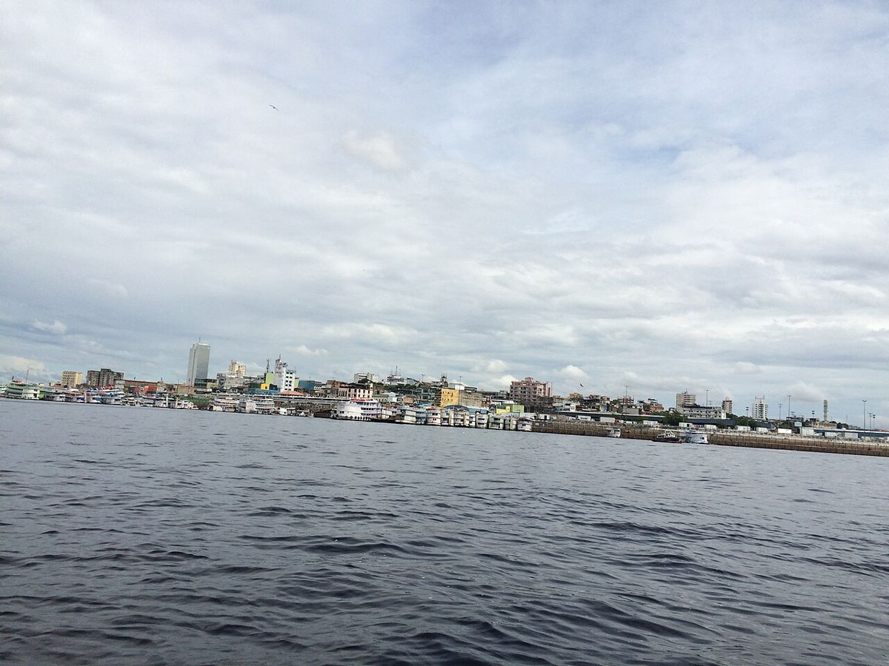
Rio abaixo, a uns quarenta quilômetros de Manaus, fica o Parque Nacional de Anavilhanas, com mais de 400 ilhas. O ICMBio o chama de segundo maior arquipélago fluvial do mundo. O número de ilhas muda com o nível da água.
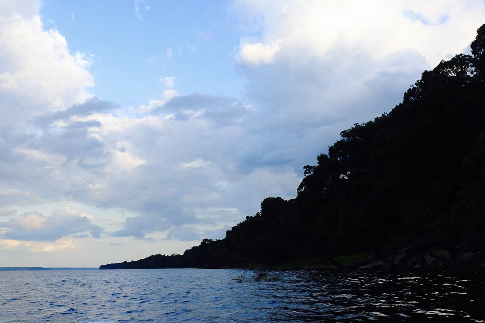
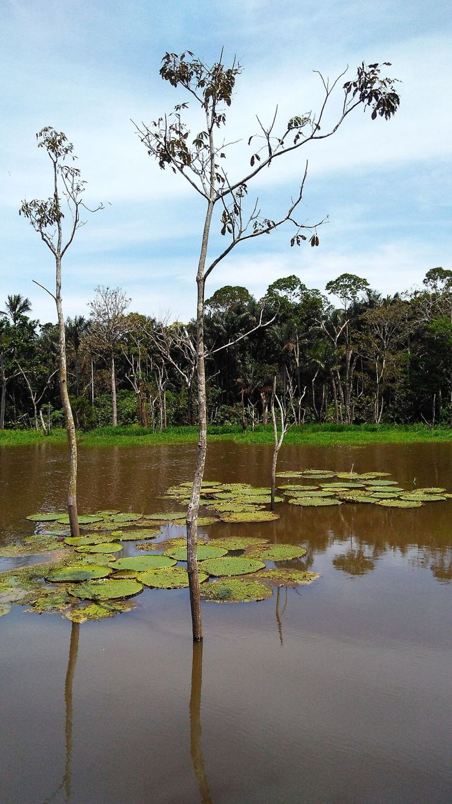
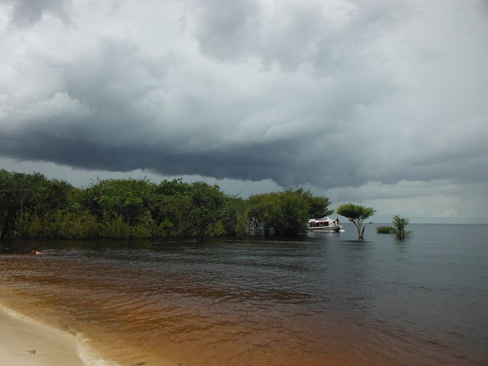
Na beira vive muita gente. No Alto Rio Negro, São Gabriel da Cachoeira, a uns 850 quilômetros de Manaus subindo o rio, tem cerca de 23 povos indígenas, e em 2010 o IBGE contou 76,6% da população como indígena. Mais abaixo, em Barcelos, vive-se de um peixinho: é a história do Projeto Piaba, mais adiante.
O que está desenhado no cenário existe de verdade na beira do Rio Negro. Um aviso sobre o tamanho: no jogo a mata do Rio Negro é desenhada gigante de propósito, com as árvores subindo até o topo da tela. É uma representação quase filosófica do tamanho da floresta, de como ela é grande perto da gente, e não uma medida. As árvores de lá não têm essas proporções.
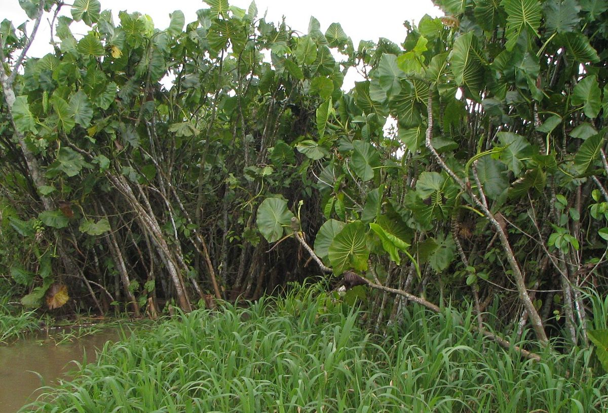
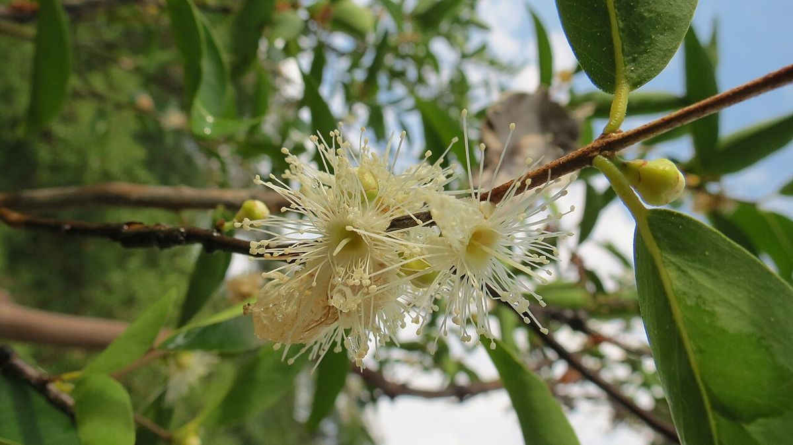
É o nome que os povos indígenas deram às raízes achatadas, em tábua, que se abrem em volta do tronco, às vezes subindo até dois metros do chão. Vem do tupi-guarani e quer dizer "raiz chata". A Embrapa descreve a sapopema como uma árvore, mas o nome também aparece para as raízes de outras árvores grandes.
Palmeira de touceira, com muitos troncos saindo da mesma raiz, nativa do estuário amazônico, em várzeas e igapós. O fruto vira o vinho de açaí, que a população amazônica consome.
Planta aquática de até cinco metros, que forma aningais na beira de rios e lagos. A folha e o fruto servem de comida para peixe-boi, tartaruga e peixe.
Arbusto da beira de rios e lagos e da mata alagada, e um dos frutos mais ricos em vitamina C que se conhece. No Rio Negro, perto de Manaus, o fruto é chamado de caçari.
Palmeira muito comum nas várzeas de água preta, aguenta meses alagada. O fruto cai uma vez por ano, com a cheia, e pelo menos dezesseis espécies de peixe comem a polpa ou engolem o fruto inteiro, ajudando a espalhar a semente. Foi estudado nas Anavilhanas.
Planta de folhas grandes e flores de cores vivas.
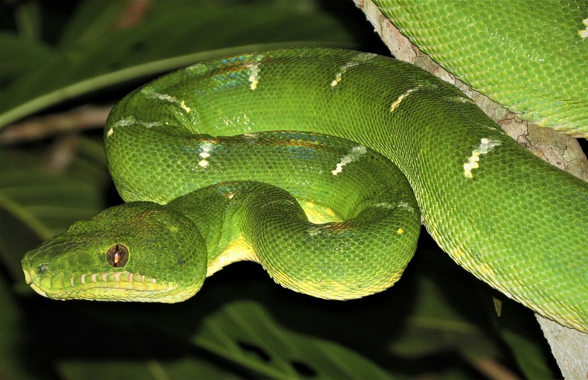
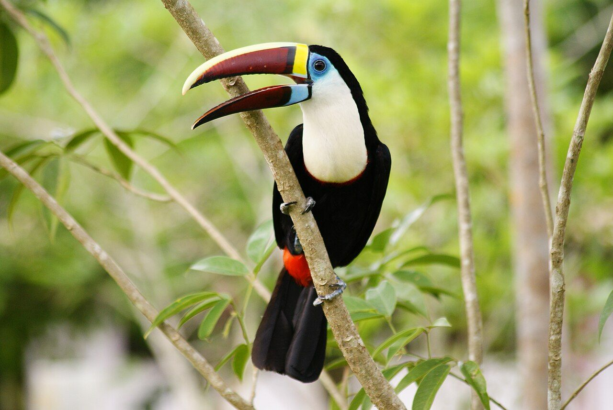
Vive pendurado nas copas. A cauda serve para segurar e escalar, e ele come sobretudo fruta, o que faz do macaco-aranha um espalhador de sementes. A IUCN o considera vulnerável, por causa da perda da floresta.
Jiboia verde que vive nas árvores e não é venenosa. A da Amazônia, Corallus batesii, gosta do alto das árvores, de doze a quinze metros, e come bichos pequenos, como marsupiais, roedores, morcegos e algumas aves. Cuidado com o nome: no popular, "cobra-papagaio" já foi dado também a uma cobra venenosa, a jararaca-verde.
Come principalmente fruta e solta a semente intacta em outro lugar, o que ajuda a floresta a se refazer. O bico serve para alcançar fruto, descascar, alcançar ninho e afastar inimigos. Na Amazônia vive o tucano-grande-de-papo-branco, Ramphastos tucanus.
A luz vem de uma reação química entre a luciferina e uma enzima, a luciferase. Na Amazônia, pesquisadores já acharam larvas de vaga-lume brilhando em cavernas de argila, para atrair as presas.
O azul das borboletas Morpho não vem de pigmento, mas de escamas minúsculas que refletem a luz, e aparece só na face de cima das asas. Um estudo do Projeto de Dinâmica Biológica de Fragmentos Florestais, do INPA, olhou 60 espécies de borboletas da Amazônia: na floresta preservada dominavam os azuis brilhantes, as asas transparentes e os vermelhos e laranjas, e nas áreas desmatadas, os tons pardos e acinzentados.
A araracanga ocorre em toda a Amazônia brasileira e vive na copa das florestas úmidas, nas matas de galeria e na beira dos rios. Come frutas, sementes, flores e cascas de árvores e visita barreiros de argila, que dão sais minerais e ajudam a neutralizar substâncias tóxicas do alimento. Faz o ninho em ocos de árvores de 10 a 25 metros de altura.
São duas respostas ao mesmo problema: o rio sobe e desce. A palafita fica sobre pilares e é típica de lugar que alaga. A casa flutuante, ou casa-balsa, acompanha a água.
Os doze peixes do Rio Negro no jogo, do mais comum ao mais raro. Quando o nome popular vale para mais de uma espécie, o cartão avisa.
Acará-açu é o nome do oscar, que vive em águas rasas, paradas ou lentas, perto de raiz e vegetação, e tem registro no Rio Negro. Os ovos são grudentos e ficam no fundo.
Peixe de menos de quarenta centímetros que come matéria orgânica do fundo e a película que cobre as coisas debaixo d'água. Vive mais em rio de água preta, mas sai dele para desovar em água barrenta, com a cheia. A pesca mais forte é no baixo Rio Negro, perto de Manaus. Como as populações da Amazônia Central foram pescadas demais, os pescadores passaram a limitar a captura aos adultos.
Sardinhas do gênero Triportheus são peixes pequenos ou médios, de cardume, que sobem para rios de água barrenta para desovar. Em Rondônia, "sardinha comprida" é o nome de Triportheus auritus, mas os nomes mudam de região para região e a confusão entre espécies é grande.
A espécie que costuma levar esse nome existe no Rio Negro: tem três manchas escuras nos lados do corpo, como olhos, e come peixinhos. Vive perto da margem, em lagoas rasas e canais lentos, passa dos sessenta centímetros e é peixe de pesca esportiva.
Descansa de dia no meio da vegetação e caça à noite, e o adulto come peixe. Dentes afiados e corpo escorregadio fazem dela um peixe difícil de segurar. O macho cuida do ninho, uma cova rasa, e continua vigiando depois que os ovos eclodem.
"Piranha" é nome de vários peixes. A piranha mais bem estudada da bacia, a vermelha, Pygocentrus nattereri, vive no Rio Negro, ouve muito bem e troca os dentes de um lado de cada vez, o que lhe permite comer sem parar. Bota ovo em raiz submersa e vigia o ninho.
É o maior dos tucunarés, até 99 centímetros e 12 quilos. O adulto vive nas partes fundas da beira das lagoas e nas margens de areia e pedra do rio principal, e come sobretudo peixes pequenos. Tem registro no Rio Negro e no Uatumã. É peixe de pesca esportiva.
Peixe de corpo fino e focinho comprido. Fica na beira do rio, na boca dos igarapés e em lagos de água parada, não forma grandes cardumes nem migra para desovar. Pula várias vezes para fora da água antes de se entregar, e por isso é peixe de pesca esportiva.
Bagre grande, com mais de um metro. Na cheia entra na mata alagada para comer fruto carnudo, e na seca come mais caranguejo e peixe. Nunca se achou filhote em rio de água preta, então ele deve descer para desovar em rio de água barrenta, mas isso não está confirmado.
Nome do grupo de bagres de couro manchado: Pseudoplatystoma fasciatum, P. reticulatum e P. tigrinum são vendidos como surubim. Come peixe, passa de um metro e migra de cem a mil quilômetros para desovar, entre a vazante e o começo da cheia. O caminho exato ainda não foi bem estudado.
Respira ar: a bexiga natatória funciona como pulmão, e ele sobe à tona mais ou menos a cada vinte minutos. Passa de três metros e de 150 quilos. Foi talvez o maior predador dos lagos de várzea da Amazônia, e em muitos lugares as populações caíram muito ou sumiram.
Não existe uma cobra-grande catalogada: é lenda. Boiúna quer dizer algo como "cobra preta", e a Cobra-Grande é uma serpente gigante que deixa a floresta e vai morar no fundo dos rios, na casa chamada boiaçuquara. Diz o conto que ela atrai barcos com uma luz e confunde pescadores e viajantes, que a tomam por um barco iluminado. Há quem conte que ela vira outros seres. A lenda corre por milhares de rios da Amazônia, e em cada lugar a história muda. A mais famosa é a dos gêmeos: uma mulher teve filhos da Boiúna, um mau e outro bom, o Honorato ou Cobra Norato, tema do poema de Raul Bopp.
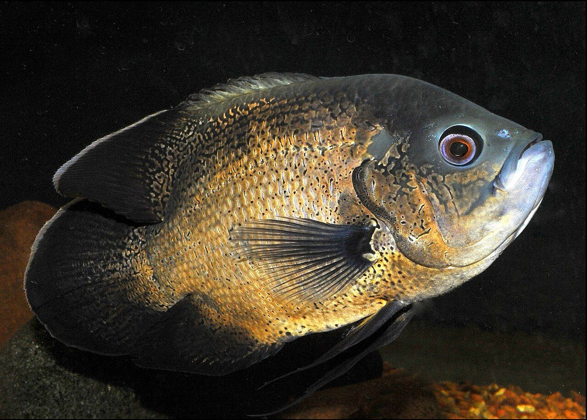
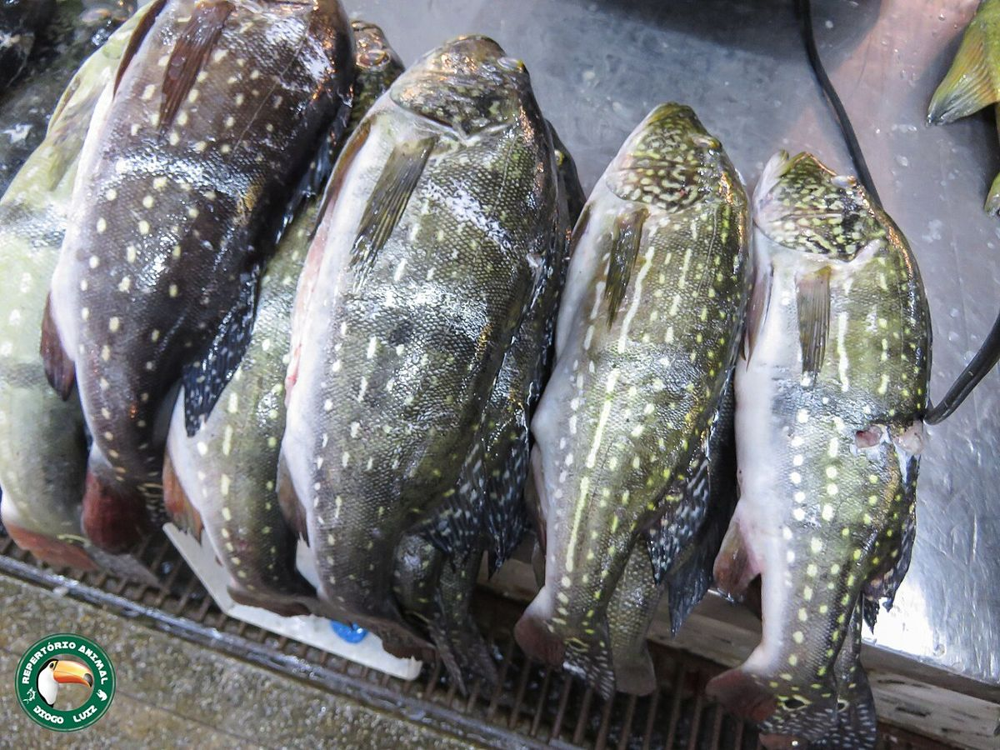
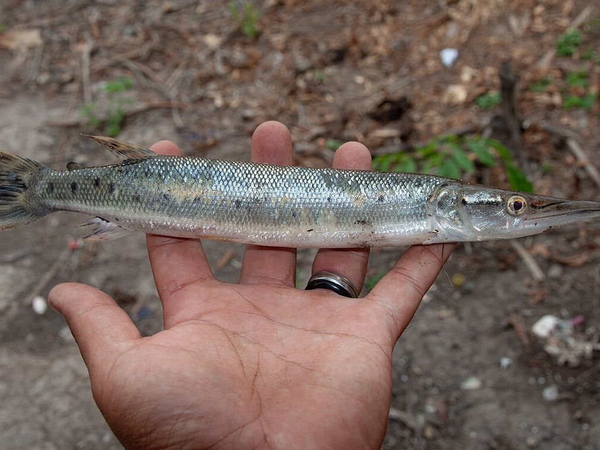
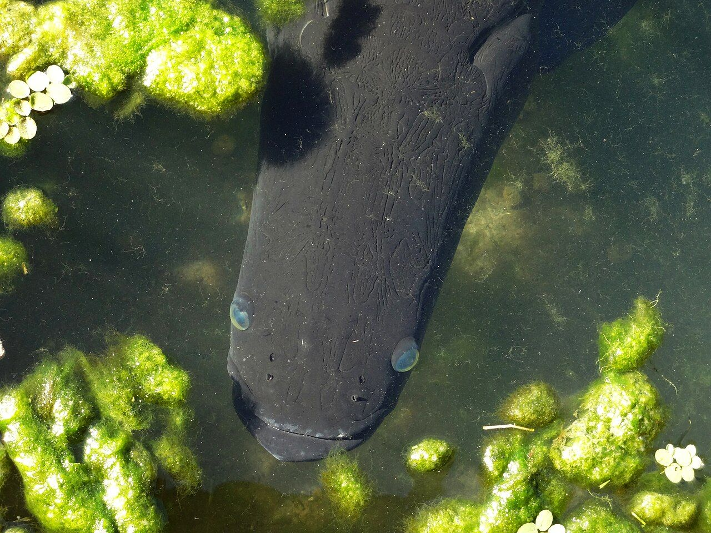
Em Barcelos, no médio Rio Negro, muita gente vive de pescar peixe pequeno para aquário. O principal é o cardinal, o Paracheirodon axelrodi, que se chama de piaba, "peixinho". Quem pesca é o piabeiro. A palavra já foi meio ofensa, e hoje ser piabeiro é motivo de orgulho: a cidade faz uma festa dos peixes ornamentais todo janeiro.
A pesca é feita à mão, com rede pequena, e o peixe que não serve é solto na hora. Quando a pescaria fica fraca num lugar, as famílias se mudam para outro e deixam a população voltar. O comércio de aquário responde por cerca de 60% da renda em dinheiro de 40 mil pessoas do município de Barcelos. Com esse sustento, a floresta em pé vale mais do que derrubada: a pesca dá a quem mora ali um motivo para cuidar das águas.
O Projeto Piaba nasceu em 1991, pelas mãos do professor Ning Labbish Chao, da Universidade do Amazonas, a partir de um estudo de 1989 feito pela universidade e pelo INPA, o Instituto Nacional de Pesquisas da Amazônia, em Manaus. Desde então, o projeto estuda a pesca de peixes de aquário no Rio Negro e ajuda a manter essa atividade viva, boa para quem vive dela e para o rio. É uma referência de que conservar e dar sustento à gente da beira podem andar juntos.
Quer conhecer o trabalho deles? O site do projeto é projectpiaba.org (em inglês).
O igapó do Rio Negro cresce devagar e vive em solo pobre, e por isso é sensível a fogo e a qualquer estrago. Um estudo concluiu que a floresta de igapó é importante para a abundância e a variedade dos peixes de água preta da Amazônia Central.
O jaraqui já foi pescado demais na Amazônia Central, e o pirarucu caiu muito ou sumiu de muitos lugares. Pescar só o adulto é um jeito de manter o rio cheio.
Todas do Wikimedia Commons, com licença que permite uso comercial. Foram reduzidas para a página.